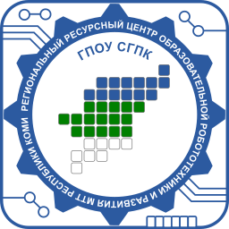

|  | Региональный ресурсный центр образовательной робототехники и развития молодежного технического творчества Республики Коми |
Курсы повышения квалификации |

В данном разделе Вы можете ознакомиться с курсами повышения квалификации, организованные «Региональным ресурсным центром образовательной робототехники и развития молодежного технического творчества республики Коми» и записаться на интересующий Вас курс. После набора группы из минимального количества слушателей мы свяжемся с Вами.
Курсы проводимые педагогами «Учебно-методического центра инновационного образования» при поддержке «Российской ассоциации образовательной робототехники»
Основы образовательной робототехники

Форма обучения: очно-заочная, 108 акад. часов
Слушатели: педагоги школ и дополнительного образования. Курс рассчитан на слушателей с отсутствием начальных знаний по робототехнике или имеющим небольшой опыт работы с образовательными конструкторами
Краткое описание курса повышения квалификации:
Наш курс по основам работы с EV3 кардинально отличается тем, что кроме стандартных навыков проектирования стандартных моделей и программирования робота педагоги получат навыки организации учебных занятий с детьми с использованием современных конструкторов интересно и увлекательно для самих детей. При этом амбициозных детей можно увлечь соревновательной робототехникой, творческих –конструкторской деятельностью, разработкой и созданием собственных проектов.
В программе курса:
| 1 | Формирование общих теоретических представлений об образовательной робототехнике как направлении педагогической деятельности. |
|---|
| 2 | Знакомство с различными видами образовательных конструкторов. |
|---|
| 3 | Знакомство и освоение программных сред, для работы с образовательными конструкторами (NXT-G, Robolab, RodotC, EV3). |
|---|
| 4 | Организация учебных занятий с детьми с использованием образовательных конструкторов. |
|---|
| 5 | Овладение навыками конструирования и программирования роботов для участия в соревновательной деятельности. |
|---|
Полное описание курса:
Внедрение в образовательный процесс ФГОС, стремительное развитие технологий, информатизация общества и многие другие факторы диктуют необходимость внесения изменений в учебный процесс. Происходящие преобразования требуют корректив в деятельности педагога и образовательного учреждения. На первый план выходит потребность педагогов в приобретении новых инструментов, позволяющих эффективно организовать урочную и внеурочную деятельность для достижения обучающимися новых образовательных результатов.
Наиболее инновационным и современным из таких инструментов является образовательная робототехника. Она представляет собой управляющую программную среду, позволяющую визуализировать учебную информацию, управлять действиями собранных моделей реальных объектов, интегрировать полученные детьми знания и вовлечь их в процесс научно-технического творчества.
Компания Lego занимает лидирующие позиции среди производителей образовательных конструкторов, поэтому именно в рамках конструктора Lego Mindstorms EV3 слушатели курсов будут приобретать необходимые знания и навыки. Специалисты Учебно-методического центра РАОР разработали уникальный курс, направленный не только на получение базовых навыков проектирования стандартных моделей и программирования робота, но и на формирование методической основы для организации учебных занятий с использованием современных конструкторов.
Наши специалисты научат Вас как заинтересовать и увлечь детей образовательной робототехникой, а также раскроют перспективы проектной деятельности с применением робототехники, в том числе соревновательной.
Наш курс поможет Вам освоить работу с конструктором Lego Mindstorms EV3, с помощью которого Вы сможете более эффективно организовать урочную и внеурочную деятельность средней школы. Каждый слушатель получит не только уникальный багаж знаний, но и эксклюзивные учебные материалы и методические разработки для организации урочной и внеурочной деятельности. Приобретённый опыт позволит Вам покорить новые вершины знаний вместе со своими воспитанниками!
По окончании обучения выдается: Удостоверение о повышении квалификации установленного образца РФ.
Стоимость обучения:
- За группу численностью 15 слушателей стоимость для одного слушателя составит 8 333 рублей.
- За группу численностью 20 слушателей стоимость для одного слушателя составит 6 250 рублей.
- За группу численностью 25 слушателей стоимость для одного слушателя составит 5 000 рублей.
Наши контакты:
Адрес: 167001, Республика Коми, г. Сыктывкар, Октябрьский пр-т, д. 24.
Контактное лицо: Попов Александр Викторович, тел.: 8(963)024-00-76, Е-mail: a.v.popov@sgpk.online.
Проектная деятельность и кружковая работа в дошкольной организации с использованием образовательных конструкторов. Платные услуги в ДОО

Форма обучения: очно-заочная, 72 акад. часа
Слушатели: педагоги дошкольного и дополнительного образования
Краткое описание курса повышения квалификации:
Данный курс направлен на внедрение в дошкольные учреждения инновационных педагогических технологий, одной из которых является проектная деятельность. В совокупности с ней немаловажную роль играет организация кружковой работы. Этот вид работы давно вышел за рамки нововведения, однако по-прежнему приносит положительные результаты и широко применяется в дошкольных учреждениях.
В программе курса:
| 1 | Дошкольное образование в условиях введения ФГОС |
| 2 | Основные виды конструкторов в образовательной деятельности дошкольников с учетом новых ФГОС |
| 3 | Организация проектной и исследовательской деятельности средствами конструктора Huna-MRT, RoboKids, LegoWEDO |
| 4 | Разработка инновационной образовательной программы дополнительного образования для детей |
| 5 | Организация кружковой работы в ДОО |
| 6 | Алгоритм оказания платных услуг в ДОО |
Полное описание курса:
Исследования показывают, что на сегодняшний момент в дошкольном образовании прослеживается негативная тенденция: потеря притягательности процесса познания, а, следовательно, и интереса к обучению. Этому свидетельствует снижающаяся положительная мотивация к занятиям и падение успеваемости детей. Статистика указывает на увеличение числа дошкольников, не выказывающих желания идти в школу. Введение новых требований к системе образования (ФГОС) обусловило необходимость внесения корректив в педагогическую теорию и практику дошкольных учреждений, совершенствование педагогических технологий.
Данный курс направлен на внедрение в дошкольные учреждения инновационных педагогических технологий, одной из которых является проектная деятельность. В совокупности с ней немаловажную роль играет организация кружковой работы. Этот вид работы давно вышел за рамки нововведения, однако по-прежнему приносит положительные результаты и широко применяется в дошкольных учреждениях.

Использование этих компонентов будет способствовать нейтрализации сложившихся негативных тенденций в системе дошкольного образования не только в разрезе отдельно взятого дошкольного учреждения, но и всей системы образования в целом. Специалисты учебно-методического центра РАОР внимательно следят за изменяющимися требованиями и вносят соответствующие коррективы в программы курсов. Важность внедрения и популяризации технического образования среди детей с самого раннего возраста очевидна, поэтому для облегчения и упрощения такого процесса нашими специалистами был разработан уникальный курс по повышению квалификации «Проектная деятельность и кружковая работа в дошкольной организации с использованием образовательных конструкторов. Платные услуги в ДОО».
Слушатели курса познакомятся с таким универсальным инструментом для реализации проектной деятельности и создания кружковой работы как образовательные конструкторы. Этот инструмент актуален и эффективен, он дает ребёнку возможность экспериментировать, синтезировать полученные знания, развивать творческие способности и коммуникативные навыки, позволяет с малых лет привить тягу к изобретательству и получению новых знаний.

Важной частью данного курса является освещение современной формы организации дополнительного образования в дошкольном учреждении, а именно организации платных услуг в ДОО. Эта форма поможет Вам стабилизировать и укрепить экономический фундамент Вашего учреждения. Слушатели получат необходимые консультации по организационным и правовым аспектам ведения данной деятельности, ознакомятся с алгоритмом оказания подобных услуг.
Большое количество часов очной части курса отведено практической работе с разнообразными конструкторами, что позволит слушателям отработать и закрепить приемы сборки, а также сравнить на практике конструкторы разных производителей.
В финале курса слушателям будет представлен проект «ИКаРёнок» ‒ единственные Всероссийские соревнования для детей дошкольного возраста. Данный проект является уникальной возможностью для педагога и его воспитанников показать результаты совместной работы.
По окончании обучения выдается: Удостоверение о повышении квалификации установленного образца РФ.
Стоимость обучения:
- За группу численностью 15 слушателей стоимость для одного слушателя составит 8 333 рублей.
- За группу численностью 20 слушателей стоимость для одного слушателя составит 6 250 рублей.
- За группу численностью 25 слушателей стоимость для одного слушателя составит 5 000 рублей.
Наши контакты:
Адрес: 167001, Республика Коми, г. Сыктывкар, Октябрьский пр-т, д. 24.
Контактное лицо: Попов Александр Викторович, тел.: 8(963)024-00-76, Е-mail: a.v.popov@sgpk.online.
Алгоритмика, программирование и исследовательская деятельность в дошкольном образовании и начальной школе

Форма обучения: очно-заочная, 72 акад. часа
Слушатели: педагоги дошкольного и дополнительного образования, педагоги начальной школы
Краткое описание курса повышения квалификации:
Образовательная программа повышения квалификации позволит педагогам и воспитателям организовать процесс обучения алгоритмике детей дошкольного возраста и начальной школы, создать возможность использования в работе нелинейных форм обучения и воспитания, реализовать требования, предъявляемые ФГОС ДОО и ФГОС НОО к условиям освоения образовательных программ. Курс направлен на обучение детей «видеть» алгоритмы и осознавать алгоритмическую сущность тех действий, которые они выполняют. Начинается эта работа с составления простейших алгоритмов, доступных и понятных детям возраста 5-10 лет, на основе учебного образовательного оборудования, робототехнических наборов-исполнителей и адаптированных виртуальных программных сред разработанных в соответствии с возрастными особенностями.
Исследовательская деятельность стала неотъемлемой частью образования детей, как дошкольного образования, так и начального. В игровой форме вместе с главным героем Наурашей (цифровая лаборатория Наураша) дети будут осваивать азы исследовательской деятельности: научатся измерять температуру, понимать природу света и звука, познакомятся с чудесами магнитного поля, померятся силой, узнают о пульсе, заглянут в загадочный мир кислотности. Совместные занятия-игры будут также увлекательны и интересны взрослым. А педагоги курса получат методические рекомендации об организации исследовательской деятельности посредством различных приспособлений и специального оборудования как в ДОО и так и в начальной школе.
В образовательную программу включены следующие аспекты:
Алгоритмика и программирование |
Методологические подходы к формированию логической и алгоритмической грамотности детей. |
Условия формирования алгоритмических умений у детей дошкольного возраста, начальной школы. |
Формы, содержание и методы преподавания основ алгоритмизации и программирования. |
Специфика образовательных робототехнических учебно-игровых пособий и визуальных объектно-ориентированных сред программирования для детей дошкольного возраста, начальной школы. |
Организация развивающей предметно-пространственной среды для осуществления познавательной деятельности, обучению алгоритмики: оснащение необходимым техническим оборудованием и дидактическими материалами. |
Изучение основ алгоритмики и программирования на примере образовательных робототехнических учебно-игровых пособий «ПроКубики», «Черепашка», «Bee-Bot», «Робомышь» и визуальных объектно-ориентированных сред программирования Скретч (Scratch), Lightbot, «ПиктоМир». |
Особенности без текстовых визуальных объектно-ориентированных сред программирования в среде ПиктоМир, Lightbot. |
Методические рекомендации по применению образовательных робототехнических учебно-игровых пособий и программных сред в познавательной деятельности. |
Особенности разработки вариативных примерных образовательных программ. |
Возможности программной среды Скретч (Scratch) для создания игр, анимированных историй, интерактивного искусства. |
Механизм отслеживания результатов алгоритмической грамотности детей дошкольного возраста, начальной школы. |
Исследовательская деятельность |
Экспериментальная деятельность. Опыт ребенка. |
Диагностика опытно-исследовательских умений детей. |
Организация исследовательской деятельности воспитанников и младших школьников. Знакомство с игровым мультимедийным продуктом «Наураша в стране Наурандии». |
Алгоритм проведения экспериментирования. |
Структура организации экспериментирования. |
Дидактический материал и техническое оснащение. |
Состав набора Наураша. Знакомство с программным обеспечением. Особенности программирования моделей Наураша. |
Методические рекомендации по организации и проведению занятий с использованием набора Наураша. |
Содержание каждого модуля рассматривается при изучении с позиций положений ФГОС ДО и ФГОС НОО.
По окончании обучения выдается: Удостоверение о повышении квалификации установленного образца РФ.
Стоимость обучения:
- За группу численностью 15 слушателей стоимость для одного слушателя составит 8 333 рублей.
- За группу численностью 20 слушателей стоимость для одного слушателя составит 6 250 рублей.
- За группу численностью 25 слушателей стоимость для одного слушателя составит 5 000 рублей.
Наши контакты:
Адрес: 167001, Республика Коми, г. Сыктывкар, Октябрьский пр-т, д. 24.
Контактное лицо: Попов Александр Викторович, тел.: 8(963)024-00-76, Е-mail: a.v.popov@sgpk.online.
Конструирование и робототехника в дошкольном образовании в условиях реализации ФГОС

Форма обучения: очно-заочная, 24 акад. часа
Слушатели: педагоги дошкольного и дополнительного образования
Краткая информация о курсе
На данном курсе слушатель не только изучит основы конструирования и программирования робототехнических комплектов, но и освоит методику создания рабочей программы, приёмы работы над структурными элементами.
Эта программа для вас, если вы…
Для педагогов дошкольного образования, которые хотят разнообразить свою профессиональную деятельность и внести в занятия с детьми новые приемы работы.
В программе курса
- Формирование общих теоретико-методических представлений об образовательной робототехнике как направлении учебно-воспитательной деятельности с учетом новых ФГОС.
- Знакомство с требованиями к основным программам дошкольного образования с учетом новых ФГОС.
- Знакомство с разными видами образовательных конструкторов, ориентированных на использование в дошкольных образовательных учреждениях.
- Применение современных образовательных конструкторов в соответствии с уровнями детского конструирования.
- Освоение методик организации занятий по конструированию и образовательной робототехнике в разных возрастных группах с применением современных конструкторов.
- Разработка образовательной программы технической направленности.
- Организация платных доп. услуг в ДОО.
- Особенности применения соревновательного метода при обучении детей дошкольного возраста. Соревнования.
В образовательную программу включены следующие аспекты:
- методологические подходы к формированию конструирования как творческой деятельности;
- формы, содержание и методы организации обучения дошкольников конструктивно-модельной деятельности;
- специфика образовательных конструкторов для каждого возрастного периода;
- организация развивающей предметно-пространственной среды для осуществления конструктивно-модельной деятельности с образовательными конструкторами: оснащение специализированной мебелью и необходимым техническим оборудованием;
- изучение основ робототехники на примере непрограммируемых конструкторов LEGO DUPLO и программируемых конструкторов: LEGO WeDo 2.0, РобоРобо RoboKIDs, Huna MRT;
- особенности программ для программирования конструкторов LEGO WeDo 2.0 в среде LEGO Education Software, Huna-MRT RUS;
- методические рекомендации по применению программируемых конструкторов в конструктивно-модельной деятельности и встраивание робототехники в образовательные области художественно-эстетического, социально-коммуникативного, познавательного, речевого и физического развития;
- особенности разработки вариативных примерных образовательных программ дошкольного образования, парциальных образовательных программ, формируемых самостоятельно педагогами, с использованием технологий образовательной робототехники в соответствии с требованиями ФГОС ДО;
- механизм отслеживания результатов конструктивно-модельной деятельности дошкольников.
Содержание каждого модуля рассматривается при изучении с позиций положений федерального государственного образовательного стандарта дошкольного образования. Данным обстоятельством обосновывается и включение таких тем как «Организация видов деятельности в дошкольном образовании с учетом новых ФГОС», «Организация проектной и исследовательской деятельности с использованием образовательных конструкторов нового поколения», «Организация предметно-развивающей среды в дошкольном образовательном учреждении», «Организация конкурсов, соревнований с использованием образовательных конструкторов», «Механизм отслеживания результатов конструктивной деятельности дошкольников».
Реализация программы предусматривает проведение лекций и практических занятий, в ходе которых организуются обсуждение и анализ учебных ситуаций, ознакомление с опытом коллег, работа в малых группах и др.
Профессиональное развитие педагогов, их переподготовка, направленная на конкретные изменения в работе в соответствие с инновационными направлениями развития системы образования, позволит организовать высокомотивированную образовательную деятельность в соответствие с требованиями федерального государственного образовательного стандарта дошкольного образования и будет способствовать качественному освоению программного материала.
По окончании обучения выдается: Удостоверение о повышении квалификации установленного образца РФ.
Стоимость обучения: 3500 рублей
Наши контакты:
Адрес: 167001, Республика Коми, г. Сыктывкар, Октябрьский пр-т, д. 24.
Контактное лицо: Попов Александр Викторович, тел.: 8(963)024-00-76, Е-mail: a.v.popov@sgpk.online.
Образовательная робототехника в начальной школе в контексте требований ФГОС

Форма обучения: очно-заочная, 72 акад. часа
Слушатели: педагоги начальной школы и дополнительного образования
Краткое описание курса повышения квалификации:
После обучения каждый педагог сможет организовать проектно-исследовательскую и конструкторскую деятельность с использованием новейшего оборудования, сможет самостоятельно разработать программу урочной и внеурочной деятельности с использованием образовательных конструкторов.
Наш курс поможет Вам освоить образовательную робототехнику, с помощью которой Вы сможете болееэ ффективно организовать учебный процесс и покорять новые вершины знаний вместе со своими воспитанниками.
Каждый слушатель унесет с собой не только уникальный багаж знаний, но и получит эксклюзивные учебные материалы и методические разработки для организации занятий по робототехнике с младшими школьниками.
В программе курса:
| 1 | Формирование общих теоретических представлений об образовательной робототехнике как направлении учебной деятельности в начальной школе. |
|---|
| 2 | Знакомство с видами образовательных конструкторов, ориентированных на занятия с учащимися начальной школы. |
|---|
| 3 | Знакомство с основами и приемами конструирования. |
|---|
| 4 | Формирование навыков моделирования и проектирования (с применением конструкторов Lego «Первые механизмы», «Первые конструкции», Education WEDO, Mindstorms NXT/EV3, HunaRobo MRT3, РобоРобо RoboKIDs). |
|---|
| 5 | Освоение программного обеспечения Lego Education WEDO Software и не только. |
|---|
| 6 | Применение образовательных конструкторов в урочной (информатика, математика, окружающий мир, технология и т.д.) и внеурочной деятельности в начальной школе. |
|---|
| 7 | Организация проектно-исследовательской и конструкторской деятельности младших школьников. |
|---|
Полное описание курса
В образовательную программу включены следующие аспекты:
- методологические подходы к формированию конструирования как творческой деятельности;
- формы, содержание и методы организации обучения младших школьников конструированию;
- специфика образовательных конструкторов для каждого класса начальной школы;
- организация школьного кабинета для занятий робототехникой: оснащение специализированной мебелью и необходимым техническим оборудованием;
- изучение основ робототехники на примере конструкторов ПервоРобот LEGO WeDo, РобоРобо RoboKIDs, Huna, LEGO Mindstorms NXT(EV3);
- особенности программ для программирования конструкторов ПервоРобот из серии Mindstorms в среде программирования NXT-G и WeDo в среде LEGO Education Software, Roborobo в среде Rogic, Huna-MRT RUS;
- методические рекомендации по применению программируемых конструкторов в образовательном процессе: внеурочная деятельность и встраивание робототехники области знаний начальной школы: «Информатика», «Технология», «Естествознание», «Гуманитарные науки»;
- особенности разработки программ внеурочной деятельности с использованием технологий образовательной робототехники для младших школьников в соответствие с требованиями ФГОС;
- возможности программного обеспечения Lego Digital Designer для создания виртуальных конструкций и технологических карт для сборки моделей из конструктора.
Содержание каждого модуля рассматривается при изучении с позиций положений федерального государственного образовательного стандарта начального общего образования. Данным обстоятельством обосновывается и включение таких тем как «Современные образовательные технологии урочной и внеурочной деятельности. Реализация системно-деятельностного подхода в начальной школе», «Проектно-исследовательская и конструкторская деятельности младших школьников в условиях ФГОС НОО», «Внеурочная деятельность школьников. Организация олимпиад и соревнований с использованием образовательных конструкторов». «Предметные результаты освоения основной образовательной программы начального общего образования» (рассматривается каждый учебный предмет начальной школы).
Реализация программы предусматривает проведение лекций и практических занятий, в ходе которых организуются обсуждение и анализ учебных ситуаций, ознакомление с опытом коллег, работа в малых группах и др.
Профессиональное развитие учителей, их переподготовка, направленная на конкретные изменения в работе в соответствие с инновационными направлениями развития системы образования, позволит организовать высокомотивированную учебную деятельность в соответствие с требованиями стандарта начального общего образования и будет способствовать качественному освоению программного материала.
По окончании обучения выдается: Удостоверение о повышении квалификации установленного образца РФ.
Стоимость обучения:
- За группу численностью 15 слушателей стоимость для одного слушателя составит 8 333 рублей.
- За группу численностью 20 слушателей стоимость для одного слушателя составит 6 250 рублей.
- За группу численностью 25 слушателей стоимость для одного слушателя составит 5 000 рублей.
Наши контакты:
Адрес: 167001, Республика Коми, г. Сыктывкар, Октябрьский пр-т, д. 24.
Контактное лицо: Попов Александр Викторович, тел.: 8(963)024-00-76, Е-mail: a.v.popov@sgpk.online.
|


 Версия для слабовидящих
Версия для слабовидящих